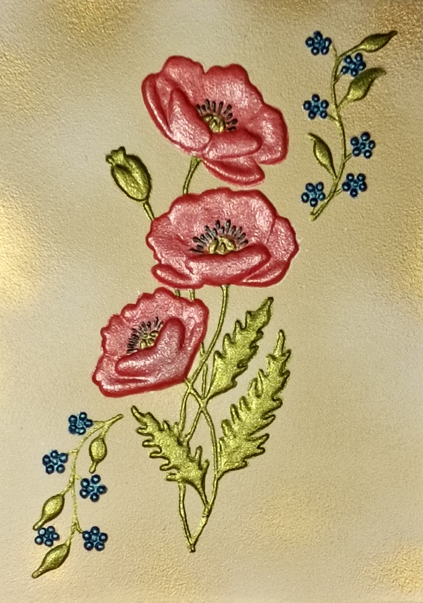

NICOLETA FILIP ART
AMAPOLAS 2
Composición floral protagonizada por tres amapolas en tonos rojos y rosados, acompañadas por tallos, hojas y pequeños motivos decorativos sobre un fondo claro texturizado.
Sobre la obra
Tres amapolas en tonos rojos y rosados, acompañadas por tallos, hojas y pequeños motivos decorativos en azul.
Presentación artística
La obra combina el volumen del relieve con una composición vertical y ligera. Las amapolas concentran la atención visual mientras los elementos vegetales y los pequeños detalles azules equilibran el conjunto.
Ficha técnica
- Año
- 2026
- Dimensiones
- 23 × 32 cm
- Soporte
- Madera
- Técnica
- Técnica mixta: pasta de relieve y flores en alto relieve
- Categoría
- Floral
Si deseas recibir información sobre esta obra, puedes solicitarla directamente.
SOLICITAR INFORMACIÓN →